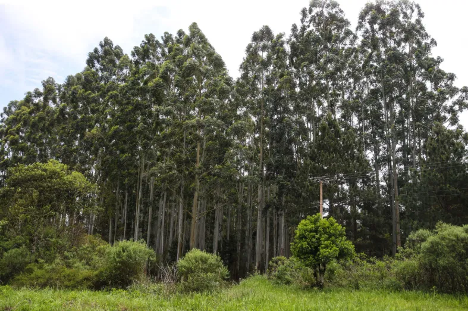
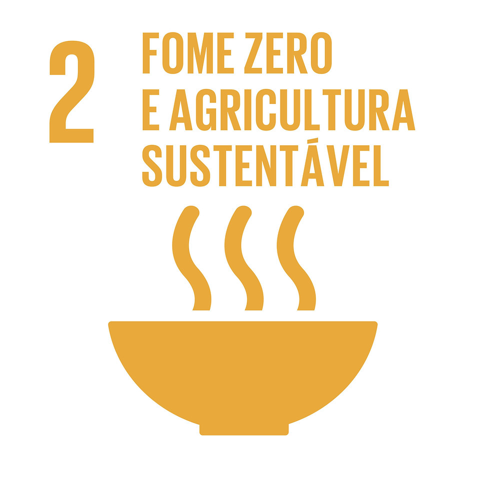
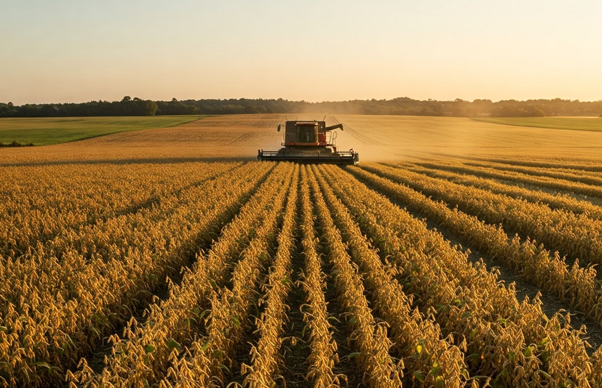

Produção & Natureza
Onde a lavoura
respeita a mata
Entre Rios é uma das regiões agrícolas mais produtivas do Paraná — e uma das que mais preservam o meio ambiente.
Produzir sem
destruir
Desde os primeiros anos de fundação, os colonizadores suábios de Entre Rios compreenderam que a terra é um recurso que precisa ser cuidado, não apenas explorado. Essa visão — enraizada tanto na cultura europeia quanto na necessidade prática de garantir colheitas futuras — moldou um modelo agrícola que hoje serve de referência nacional.
Mais de 30% da área do distrito é coberta por vegetação nativa, superando o mínimo exigido pelo Código Florestal Brasileiro. As matas ciliares ao longo dos rios Jordão e Pinhão são preservadas rigorosamente, protegendo os mananciais que abastecem tanto a agricultura quanto as comunidades locais.
A Cooperativa Agrária mantém um horto florestal próprio que produz e distribui mudas de espécies nativas gratuitamente para produtores da região, incentivando a recomposição de áreas degradadas e a criação de corredores ecológicos entre fragmentos de mata.

O que Entre Rios
representa para o Paraná
O Paraná é o segundo maior estado produtor de grãos do Brasil, e Entre Rios é parte fundamental dessa equação. A região de Guarapuava, impulsionada pela presença da Cooperativa Agrária, é responsável por uma parcela expressiva da produção paranaense de trigo e cevada — culturas de inverno essenciais para o abastecimento nacional de farinhas e malte.
Além da produção em si, Entre Rios exporta conhecimento. A FAPA desenvolve variedades adaptadas ao clima subtropical do sul do Paraná e as disponibiliza para produtores de toda a região. Seus resultados em pesquisa influenciam diretamente a produtividade de milhares de agricultores que nunca pisaram em Entre Rios, mas cultivam sementes desenvolvidas ali.
Do ponto de vista ambiental, o distrito funciona como um importante corredor ecológico entre fragmentos de Floresta com Araucária — um dos biomas mais ameaçados do Brasil: segundo pesquisa publicada na revista Biological Conservation em 2024, restam apenas 4,3% de sua cobertura original — o equivalente a cerca de 1,2 milhão de hectares. A manutenção de mais de 30% de vegetação nativa em uma área de alta pressão agrícola é uma conquista rara e valiosa para o ecossistema paranaense.
"A Floresta com Araucária é o símbolo do Paraná. Preservar fragmentos dela dentro de uma das regiões mais produtivas do estado é um feito que merece muito mais atenção do que recebe."
— Instituto Paranaense de Desenvolvimento Econômico e Social (IPARDES)

Entre Rios e a
Agenda 2030
A ODS 2 — Fome Zero e Agricultura Sustentável é um dos 17 Objetivos de Desenvolvimento Sustentável estabelecidos pela ONU em 2015. Seu objetivo é acabar com a fome, alcançar a segurança alimentar, melhorar a nutrição e promover a agricultura sustentável até 2030 — garantindo que todas as pessoas tenham acesso a alimentos suficientes, seguros e nutritivos durante o ano todo.
Entre Rios é um exemplo concreto de como esse objetivo pode ser alcançado na prática. A Cooperativa AGRÁRIA integra toda a cadeia produtiva — da semente à entrega —, garantindo renda estável aos agricultores, rastreabilidade dos alimentos e produção sem degradação ambiental. O sistema de plantio direto, pioneiro na região desde os anos 1970, reduz a erosão do solo e mantém a fertilidade da terra para as próximas gerações, cumprindo diretamente as metas de produção sustentável da ODS 2.
A FAPA desenvolve variedades agrícolas adaptadas ao clima subtropical que aumentam a produtividade sem expandir a área plantada — uma das estratégias centrais da ODS 2 para alimentar uma população crescente sem destruir novos ecossistemas. Enquanto isso, a preservação de mais de 30% do território em vegetação nativa protege nascentes e biodiversidade, assegurando os recursos hídricos essenciais para a agricultura do futuro.
🌱 Entre Rios como modelo para a ODS 2
Em um país onde a expansão agrícola frequentemente anda junto com o desmatamento, Entre Rios demonstra o caminho oposto: mais de 70 anos de produção intensiva sem abrir novas áreas de vegetação nativa, com produtividade crescente e uma comunidade economicamente próspera. Esse é exatamente o modelo que a ODS 2 propõe para o mundo.

O plantio direto
que mudou o Brasil
Na década de 1970, técnicos da AGRÁRIA e agricultores de Entre Rios foram pioneiros na adoção e no aperfeiçoamento do sistema de plantio direto no Brasil. A técnica consiste em semear as culturas sem revolver o solo, mantendo a cobertura vegetal da safra anterior sobre a terra.
Os benefícios ambientais são profundos: o plantio direto reduz drasticamente a erosão do solo, diminui a perda de nutrientes por lixiviação, aumenta a infiltração da água no solo e sequestra carbono na matéria orgânica. Em uma região com chuvas intensas como Guarapuava, essa prática foi decisiva para manter a fertilidade dos campos ao longo das décadas.
"O plantio direto nasceu da observação dos agricultores de que a natureza nunca ara o solo. A mata não precisa de arado para ser fértil — a lavoura também não."
— FAPA, Fundação Agrária de Pesquisa AgropecuáriaHoje, o plantio direto está presente em mais de 33 milhões de hectares de lavouras de grãos no Brasil — estimativas mais recentes apontam para mais de 41 milhões —, sendo a técnica agrícola de conservação mais adotada no país (IBGE, Censo Agropecuário 2017). Entre Rios e a AGRÁRIA são reconhecidos internacionalmente como berço dessa revolução silenciosa que transformou a agricultura brasileira sem fazer barulho.
Um distrito importante
que o Brasil pouco conhece
Apesar de tudo que Entre Rios representa — para a agricultura brasileira, para a preservação ambiental, para a história da imigração e para o desenvolvimento do Paraná —, o distrito segue sendo amplamente desconhecido fora do estado. Até mesmo dentro de Guarapuava, muitos moradores da sede municipal têm pouca consciência da relevância do distrito localizado a poucos quilômetros de distância.
🌿 Um modelo que o mundo precisa conhecer
Entre Rios prova que alta produtividade agrícola e responsabilidade ambiental não são objetivos opostos. Em um momento em que o mundo debate como alimentar bilhões de pessoas sem destruir o planeta, o modelo de Entre Rios oferece respostas concretas — baseadas não em teoria, mas em mais de 70 anos de prática.
A invisibilidade de Entre Rios tem consequências práticas: menos recursos públicos para infraestrutura, menos investimento em turismo rural e histórico, menos valorização do patrimônio cultural suábio. Comunidades com histórias muito menos relevantes recebem muito mais atenção da mídia e das políticas públicas.
Iniciativas como este projeto têm papel fundamental nessa mudança. Divulgar a história, os números e o modelo de Entre Rios é o primeiro passo para que o distrito receba o reconhecimento que merece — não apenas como polo agrícola, mas como exemplo vivo de como o Brasil pode se desenvolver com responsabilidade, identidade e respeito à natureza.
"Entre Rios não é apenas um distrito de Guarapuava. É uma lição de como recomeçar, produzir e preservar ao mesmo tempo. O Brasil precisa aprender com ele."
— Projeto Entre Rios · Guarapuava, 2026Conheça a história completa
Da chegada dos imigrantes às conquistas do século XXI.